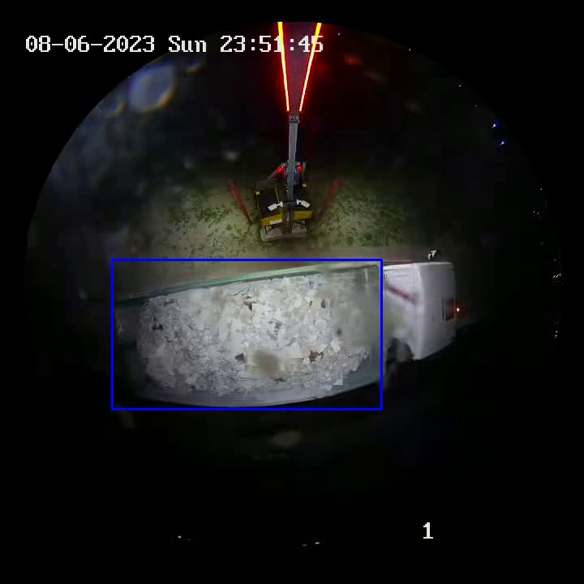
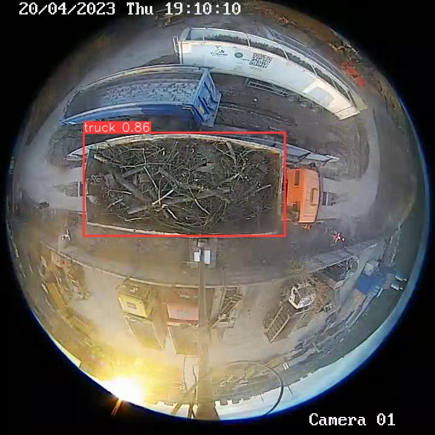
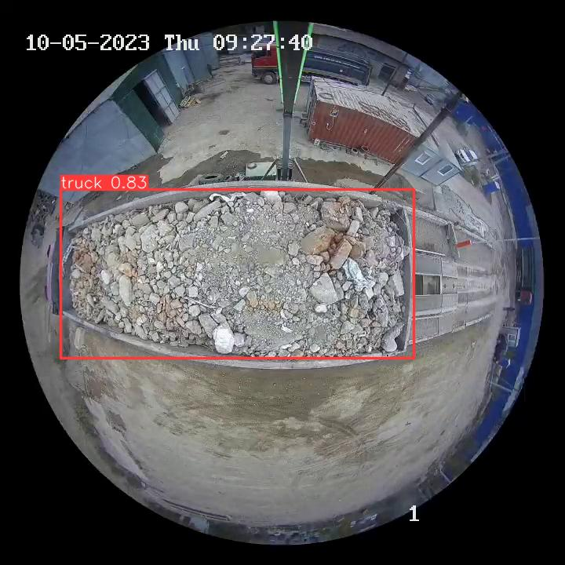
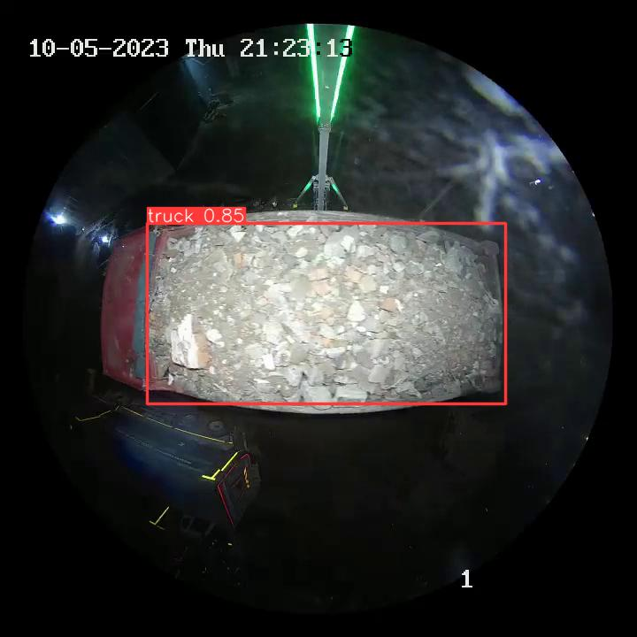
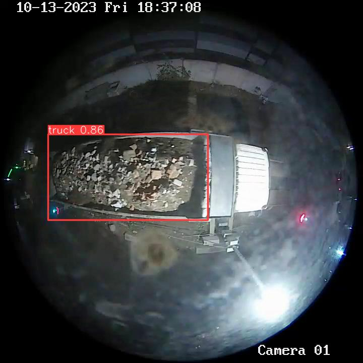
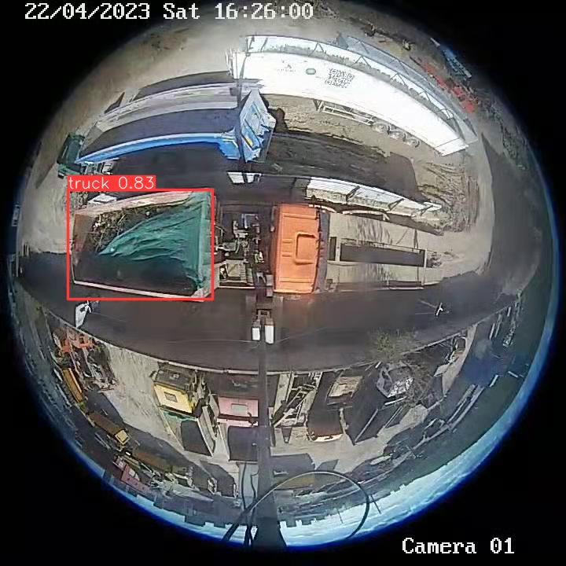

TrashNet: Эффективный контроль за строительными отходами через анализ видео с самосвалов.
Ошибка
Сервер не дал ответа






Ваше видео обрабатывается...TrashNet is working...Нейросеть справялется. Всё хорошо... Определяемся с видом мусораОтличаем кирпич от грунтаПьём кофеУже почти